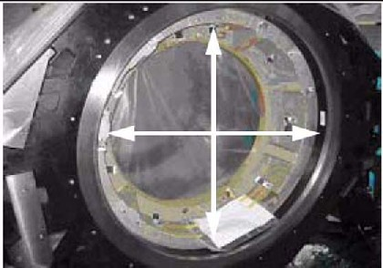
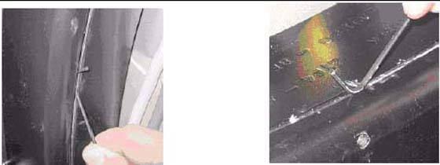

Operating Documentation
Direction 5193574-800, Rev# 22
LightSpeed 7.X Service Methods
Module Version 1.0, Version Date 4/22/10
Operating Documentation |
| Required Persons | Preliminary Reqs | Procedure | Finalization |
|---|---|---|---|
| 2 (FE or mechanical supplier) | 15 mins | 15 mins | 5 mins |
All CT systems require a gantry bearing gap inspection before starting electrical calibration.
All international gantries are shipped in a wooden shipping crate that should not be removed until it arrives at the installation site. This shipping container is designed to reduce the risk of shipping damage.
The back cover needs to be removed to gain access to the gantry bearing.
| Item | Qty | Effectivity | Part# | Manufacturer | |
|---|---|---|---|---|---|
| Standard tool kit | 1 | - | - | - | |
| Inspection document | 1 | - | - | - | |
| 2.5 mm Allen wrench | 1 | - | - | - | |
| Rear cover dollies | 2 | - | - | - | |
| Flashlight | 1 | - | - | - | |
If this is a Rotek bearing, a mark similar to that shown in Illustration 1 is visible on the inside edge of the black-colored bearing assembly.
Illustration 1: Gantry Bearing - Rotek Label

The mark has a serial number in the same format as: ROTEK 2TF4-44E1B-MA91960-8F-2372-REV13.
The gap to inspect is shown in Illustration 2 next to the serial number.
Illustration 2: Gantry Bearing

On most systems, a change in the bearing gap does not cause the gantry to make unusual sounds, unless the gap is severe. If the gantry is badly damaged and the gap is severe, it can cause operation issues. Some systems are shipped with shock indicators that must be returned to Milwaukee.
A severe failure may be seen during installation as a problem rotating the gantry.
Remove the scan window.
Remove the top and rear gantry covers.
Use a 2.5 mm hex wrench as a tool to measure the gap at the positions shown in Illustration 3. The location of gantry components does not matter. Measure four (4) locations 90 degrees apart from each other.
Illustration 3: Inspection Locations

If the 2.5 mm easily fits without effort in the gap, the gap is out of spec. Illustration 4 shows a gap that is too large in the left picture. The illustration shows a gap that is good in the right picture. Notice that the hex wrench does not fit in the gap in the left picture, but does in the right picture.
Illustration 4: Gap too large (left) Gap is good (right)

Mechanical Installers:
If the Bearing Gap Inspection passes, the Mechanical Installer completes the sign-off on the GE Form e4879, Installation Data verification form, that this inspection was completed.
FE Service Action, if Required:
If the Bearing Gap Inspection fails, the Mechanical Installer notifies the site FE that the inspection failed. The site FE should:
Open a bearing inspection dispatch.
Follow the inspection procedure described in this section.
Record the bearing inspection results.
If no damage is found, close this dispatch and continue with the electrical calibration procedures.
If the system is damaged, go to the Equipment Delivery Quality web site and follow their instructions.
To enter a damaged in shipping claim, go to this web site: http://egems.med.ge.com/edq/home.jsp
FE Inspection Completion:
After the Gantry Bearing Inspection is complete, close the service dispatch with the following information:
- Gantry Serial Number
- Gantry Type
- System ID
- Site Name
- Installation date
- Was the gantry transported to the site in the shipping crate? (Yes/No)
- Was the gantry lifted or hoisted, were riggers used, or was the gantry delivered via flatbed wrecker? (Yes/No)
- Number of locations that fail the gap inspection if any: _____
Close the service dispatch.
Should any follow-up be required after this inspection, the site engineer will be contacted directly by CT Engineering.